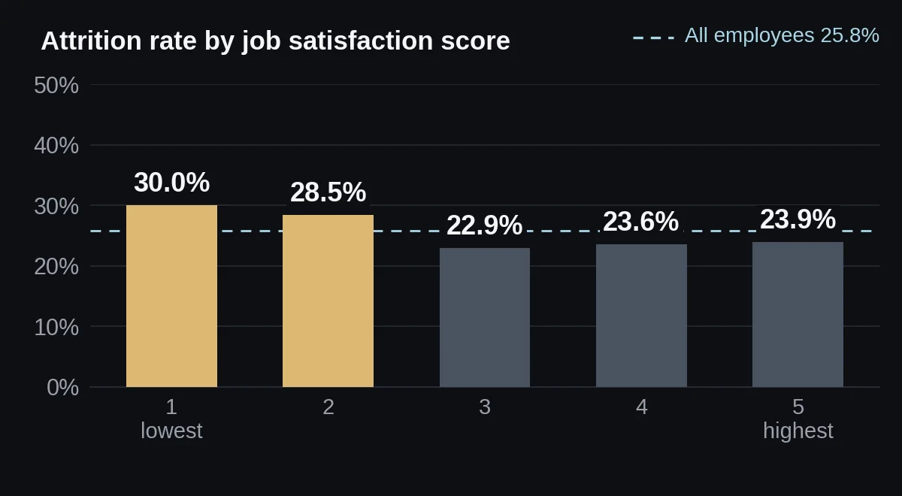
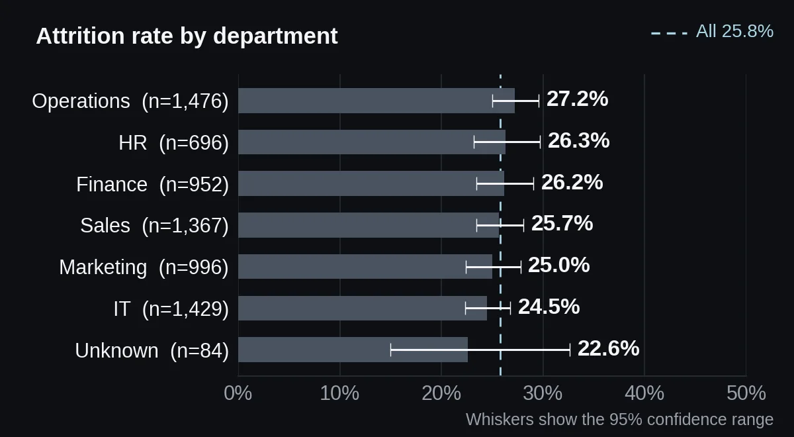

Employee Attrition Analysis
I looked for what separates employees who leave from those who stay, and which of those factors an HR team could change.
Summary
Start with overtime and low satisfaction. Department, remote work and job level show no difference.
Problem
The dataset covers 7,000 employees, and 25.8% of them left. The question: who leaves, and which factors could HR change?
The files contain no brief, so the questions come from the notebook's own insight list: compare attrition across departments, examine overtime and job satisfaction as possible indicators, and compare the salaries of employees who left and stayed.
Data
- Source
- TODO for Moaz: say where this dataset comes from; the notebook does not say
- Size
- 7,100 rows and 11 columns. 7,000 unique employees remain after removing 100 duplicate rows.
- Columns
- Employee_ID, Department, Job_Level, Age, Years_At_Company, Monthly_Salary, Overtime, Job_Satisfaction (1 to 5), Training_Hours, Remote_Work, Attrition (1 = left, 0 = stayed)
- Quality problems
- Before cleaning: 86 missing departments, 73 missing salaries and 56 missing satisfaction scores. 27 ages fall outside 18 to 100, and the lowest is −7.
- Definitions
- TODO for Moaz: explain what Overtime and Attrition measure, and over what period employees left; the files do not say
- Currency
- TODO for Moaz: state the currency of Monthly_Salary; the files give none
Method
- Removed 100 duplicate rows and standardised the text in Department, Job_Level, Overtime and Remote_Work.
- Filled 84 missing departments with "Unknown". Replaced 25 invalid ages, 70 missing salaries and 56 missing satisfaction scores with the column median.
- Added age, tenure and salary bands.
- Compared attrition by department, overtime and satisfaction score, and salary by outcome.
- Tested the salary gap between leavers and stayers with Welch's t-test, the notebook's test.
- Added checks the notebook does not contain: chi-square tests for each category, effect sizes, and 95% confidence ranges for each department.
What I found
Overtime shows the clearest gap
35.5% of employees who work overtime left (696 of 1,958), against 22.0% of those who do not (1,107 of 5,042). That is 13.6 percentage points more. Overtime staff make up 28.0% of employees but 38.6% of leavers. Chi-square test: p < 0.0001, Cramér's V = 0.14, a moderate link.

Low satisfaction adds a weaker signal
Attrition is 30.0% at satisfaction score 1 and 28.5% at score 2, then drops to 22.9%, 23.6% and 23.9% for scores 3 to 5. Scores 1 and 2 together give 29.2% (2,777 employees), against 23.5% for scores 3 to 5 (4,223). The link is real (p < 0.0001) but weak (V = 0.07), and it looks like a step at score 3, not a smooth slope.

Pay differs, but only a little
Employees who left earned 6,841.97 a month on average, against 7,131.57 for those who stayed. That is 289.60 less, or 4.1% (95% confidence interval 159.40 to 419.80; Welch's t-test, p < 0.0001). Cohen's d is 0.12, a small effect, so pay explains little on its own.
Department, remote work and job level make no difference
Across the six named departments, attrition ranges from 24.5% to 27.2%. The 95% confidence ranges overlap, and the chi-square test finds no difference (p = 0.70). Remote work shows none either: 25.8% for on-site staff and 25.7% for remote staff (p = 0.98). Job level ranges from 24.7% to 28.5% (p = 0.13); Engineers are highest, but the gap is not significant. Tenure (7.54 vs 7.49 years, p = 0.71), age (p = 0.23) and training hours (p = 0.94) do not separate leavers either.

| Question | Result | Test | p-value | Verdict |
|---|---|---|---|---|
| Salary, stayed vs left | 7,131.57 vs 6,841.97 | Welch t-test Notebook | p < 0.0001 | Significant Small effect (d = 0.12) |
| Overtime | 35.5% vs 22.0% | Chi-square Added | p < 0.0001 | Significant Moderate (V = 0.14) |
| Job satisfaction, scores 1 to 5 | 22.9% to 30.0% | Chi-square Added | p < 0.0001 | Significant Weak (V = 0.07) |
| Department | 24.5% to 27.2% | Chi-square Added | p = 0.70 | Not significant |
| Job level | 24.7% to 28.5% | Chi-square Added | p = 0.13 | Not significant |
| Remote work | 25.8% vs 25.7% | Chi-square Added | p = 0.98 | Not significant |
No cause. The data is a single snapshot with no dates. Overtime, low satisfaction and leaving may all move together for other reasons. Nothing here shows that overtime makes people leave.
Overlap. I did not check whether the employees who work overtime are also the unhappy ones, so the two effects may partly be one.
Big sample, small gaps. With 7,000 employees, even a 4.1% pay gap is significant. I report the effect size next to every p-value for that reason.
Filled values. 84 employees have no department, and 25 ages were replaced with the median.
Recommendation
- Review overtime first. Overtime staff are 28.0% of employees but 38.6% of leavers. Find out which teams and roles carry the most overtime, and whether it is required or voluntary.
- Add a satisfaction check-in for employees who score 1 or 2. Their attrition is 29.2%.
- Do not build a department-specific retention plan on this data. Department gaps are within noise.
- Treat pay as a secondary lever. The gap is significant, but leavers earn only 4.1% less.
What I would do next
- Fit a logistic regression with overtime, satisfaction, salary and job level together, to see which effects hold once the others are controlled.
- Check whether the employees who work overtime are the same ones who report low satisfaction.
- Get exit dates, so I can test whether overtime comes before leaving.
- Ask HR what counts as overtime and over what period attrition was measured.